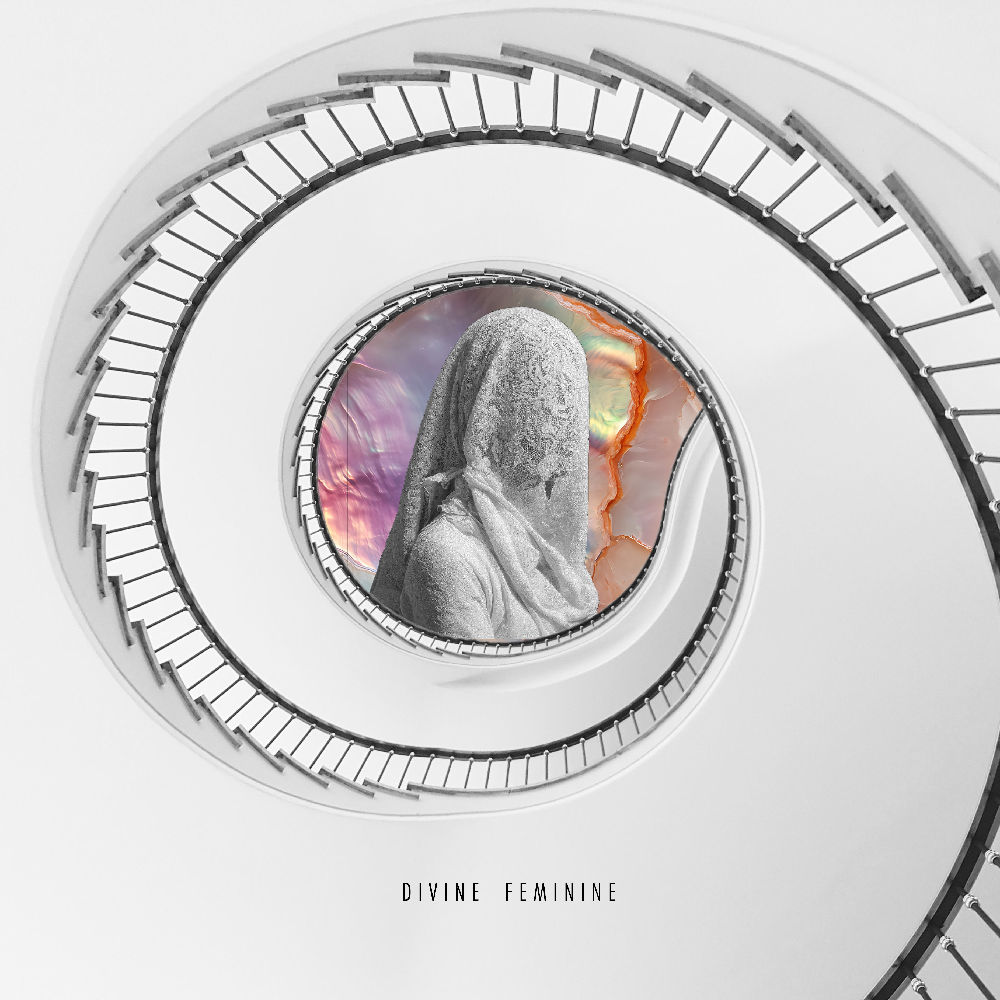
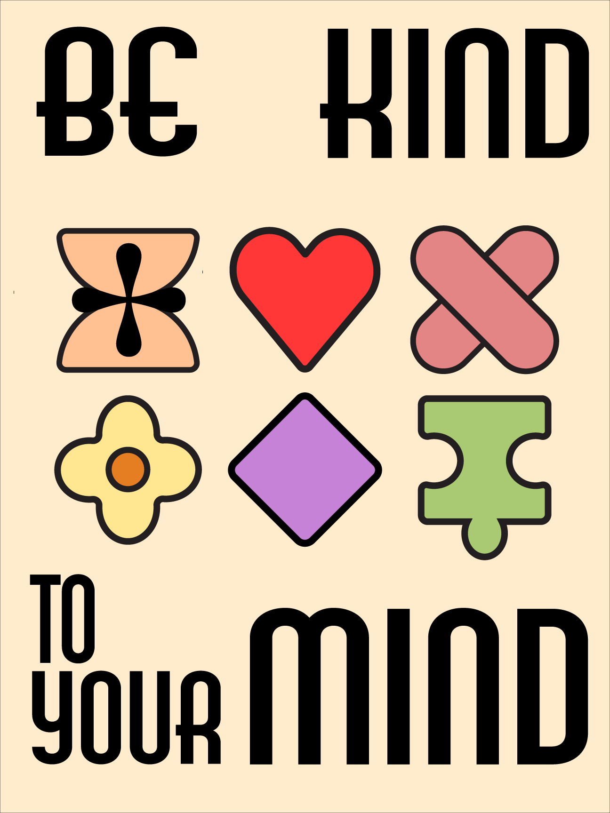
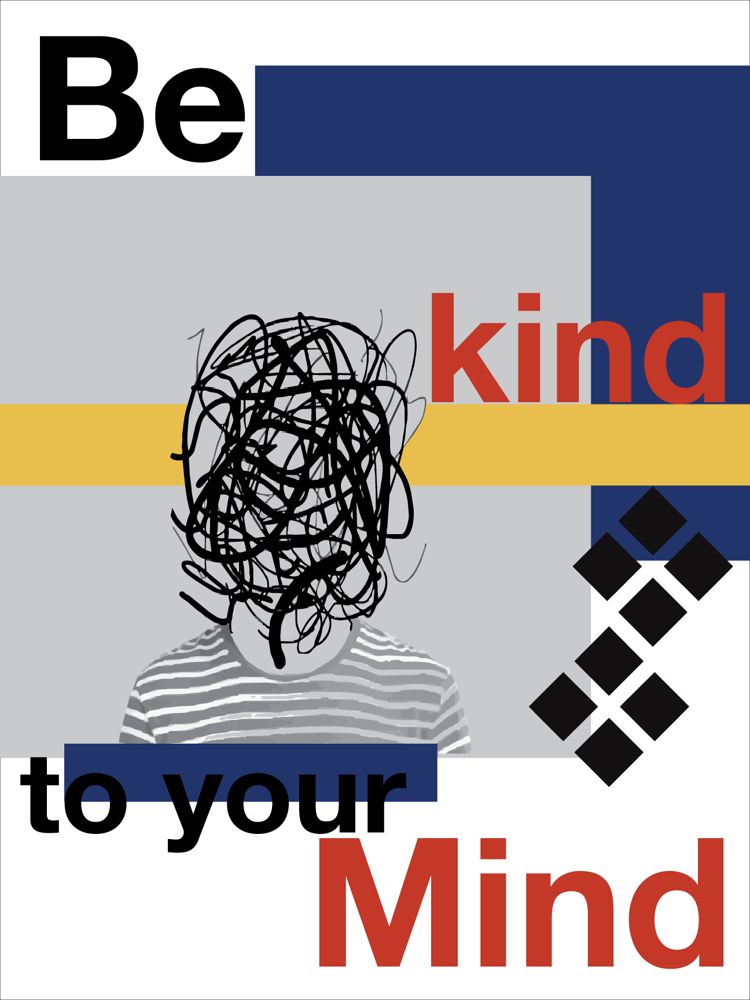
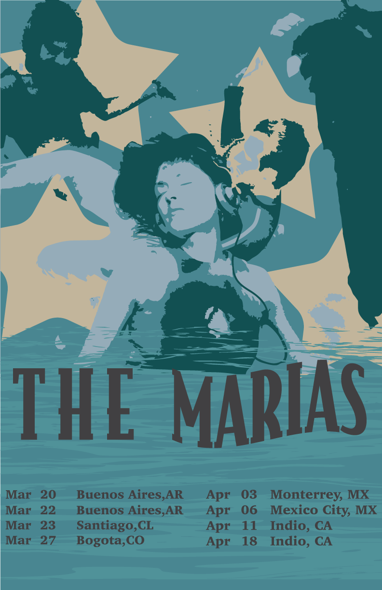

My mental health awareness poster is inspired by the artistic style of Piet Mondrian, especially his use of geometric shapes, bold colors, and simple compositions. I incorporated overlapping rectangles, strong color blocks, and a clean layout to reflect his abstract approach to design. I wanted to combine Mondrian's structured and organized style with a more emotional message about mental health. The scribbled lines covering the person's face represent the feeling of overwhelming thoughts, stress, and mental struggles that people may experience internally but do not always express outwardly. The message, "Be kind to your mind," encourages people to practice self-compassion and recognize the importance of mental well-being.